Week 3 · Day 13 — what your liver does with ethanol
Organic Chemistry 1
About this lecture
After a drink, your liver turns ethanol into acetaldehyde and then into acetate. If the second step is slow, acetaldehyde piles up and you get the red face, racing heart and nausea of an “alcohol flush”. The drug disulfiram treats alcoholism by blocking that second step on purpose. Both steps are oxidations of one carbon.
Today we learn to follow that carbon:
Classify alcohols as primary, secondary or tertiary, and predict what each oxidises to
Oxidation states of carbon, as a quick bookkeeping check
Reduction of aldehydes and ketones with NaBH₄, drawn as two steps
Activating OH so it can leave, and IR evidence for a redox change
Amounts and yield: limiting reagent, theoretical mass, what yield can’t tell you
Yesterday we made alcohols by adding water to alkenes. Today we change how oxidised the alcohol carbon is.
Your liver runs two oxidations in a row
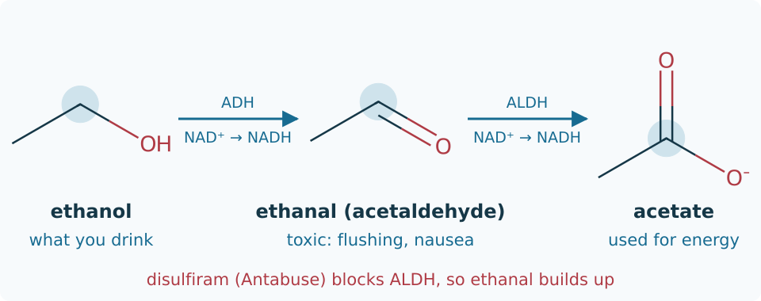
Ethanol to ethanal to acetate in the liver
Look at the shaded carbon. Each step removes a C–H bond and adds a C–O bond. The H leaves as a hydride, picked up by NAD⁺, which becomes NADH.
Primary, secondary, tertiary
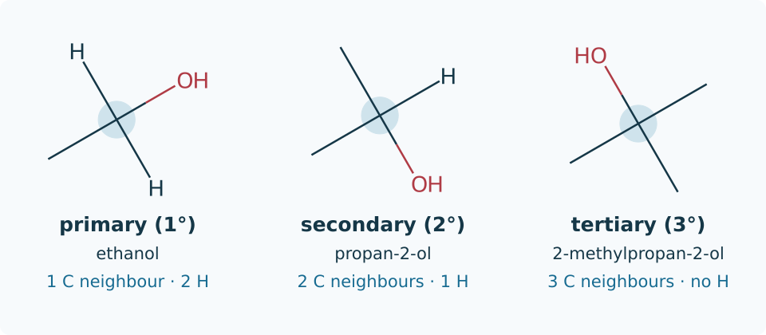
Ethanol, propan-2-ol and 2-methylpropan-2-ol
Classify by the OH-bearing carbon (the carbinol carbon): count its carbon neighbours. That also tells you how many H it carries, which decides how far it can be oxidised.
Oxidation state: a bookkeeping check for carbon
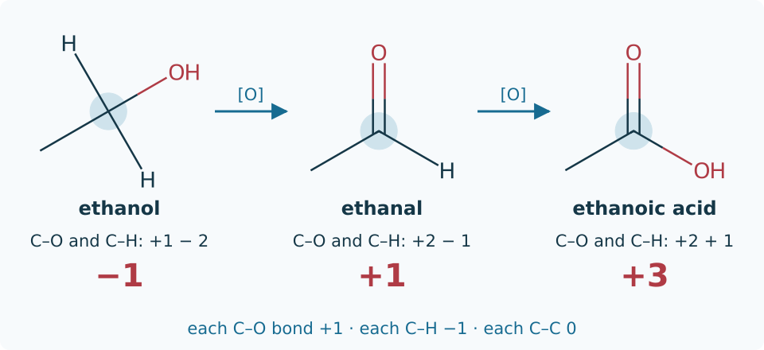
Oxidation states of the changing carbon
Count only bonds to the carbon you care about: C–O +1 per bond (C=O counts +2), C–H −1, C–C 0. Oxidation raises the number; reduction lowers it.
Try it: what’s the carbinol carbon in propan-2-ol, and the carbonyl carbon in propanone?
0 and +2. Propan-2-ol: +1 (C–O) − 1 (C–H) = 0. Propanone: +2 (C=O), no C–H. Up by two, so it’s an oxidation.
Primary alcohols: stop at the aldehyde, or go on to the acid
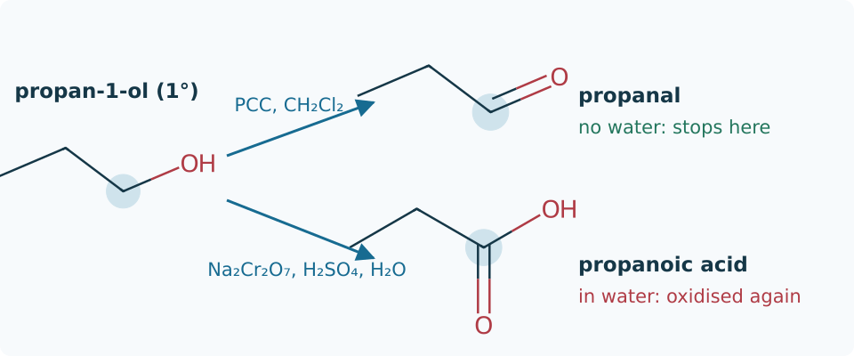
Propan-1-ol oxidised by PCC or by aqueous dichromate
A primary alcohol has two C–H to give up, so it has two oxidation targets. To stop at the aldehyde, use a reagent without water, such as PCC in CH₂Cl₂. In water, the aldehyde is oxidised again to the carboxylic acid.
Secondary alcohols give ketones
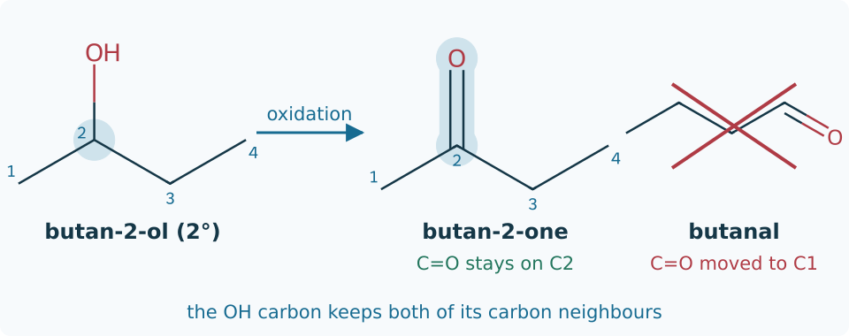
Butan-2-ol oxidises to butan-2-one
The C=O forms exactly where the OH was. Both carbon neighbours stay attached, so the product is a ketone. With no further C–H on that carbon, oxidation stops there.
Try it: a student writes butanal as the product. What went wrong?
The C=O moved. Butanal has its carbonyl on C1, but oxidation only changes the carbon that carried the OH, which is C2.
Tertiary alcohols resist simple oxidation
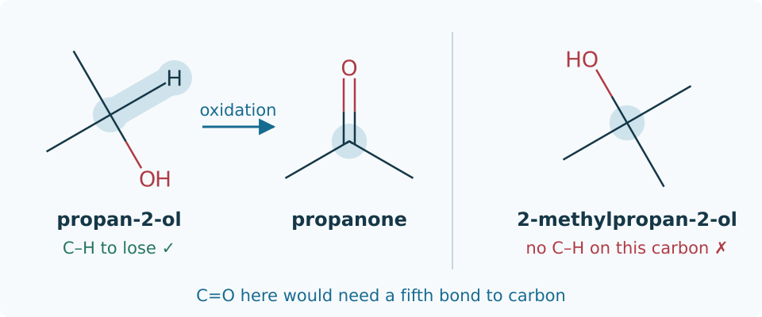
Propan-2-ol versus 2-methylpropan-2-ol
Oxidation to C=O needs a C–H on the carbinol carbon. A tertiary carbon has three C–C bonds and a C–O; drawing (CH₃)₃C=O would give it five bonds.
Harsh oxidants can break C–C bonds instead, but that’s a different reaction and outside our toolkit.
Reduction runs the map backwards
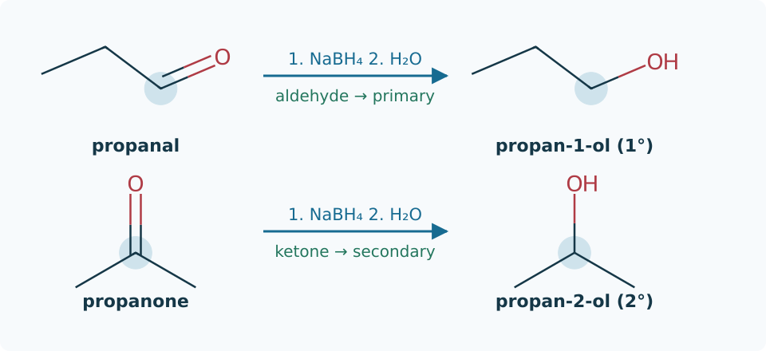
NaBH₄ reduces an aldehyde and a ketone
Sodium borohydride, NaBH₄, adds H to the carbonyl carbon; a proton source then puts H on oxygen. Aldehydes give primary alcohols, ketones give secondary alcohols. The carbon skeleton is unchanged.
Step 1: a hydride adds to the carbonyl carbon
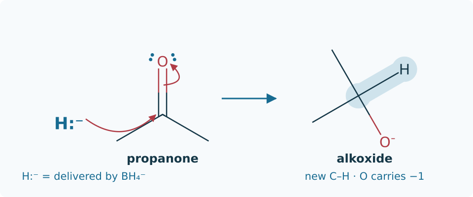
Hydride delivery to propanone
Two arrows: the H:⁻ pair forms the new C–H, and the C=O π pair moves onto O. The product is an alkoxide, with O⁻. “H:⁻” is shorthand for a hydride delivered by BH₄⁻; there’s no free hydride in solution.
Try it: why must the π bond break when the H adds?
Valence. The carbonyl carbon already has four bonds. A fifth is impossible, so the π pair has to leave, onto the more electronegative oxygen.
Step 2: water protonates the alkoxide
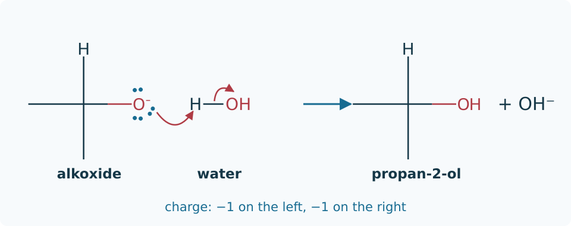
Proton transfer from water to the alkoxide
The alkoxide is a strong base, so it takes H⁺ from water. Name the donor and write its conjugate base: charge is −1 on both sides, and every H is accounted for.
A new stereocentre, both hands
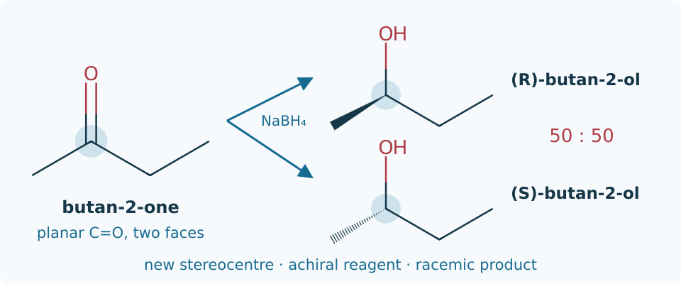
Reduction of butan-2-one gives both enantiomers
The carbonyl is planar, so hydride can arrive from either face with equal ease. Butan-2-ol has a stereocentre, and an achiral reagent makes a racemic 50 : 50 mixture.
Try it: does the product solution rotate plane-polarised light?
No. Equal amounts of R and S cancel. A racemate is optically inactive even though each molecule is chiral.
NaBH₄ has a scope
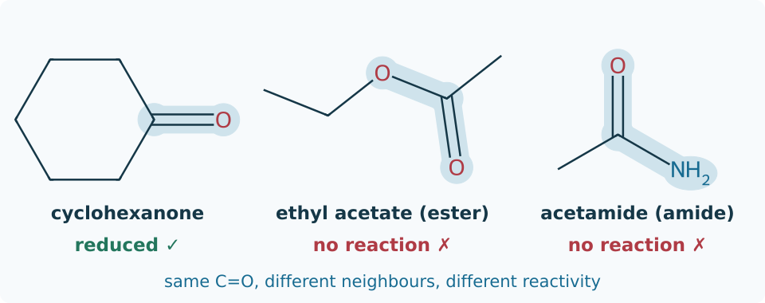
What NaBH₄ reduces
Esters and amides have a C=O too, but the O or N next to it donates electrons and makes the carbonyl less reactive. NaBH₄ reduces aldehydes and ketones; don’t stretch that rule to other carbonyl groups.
Choose the direction from the target
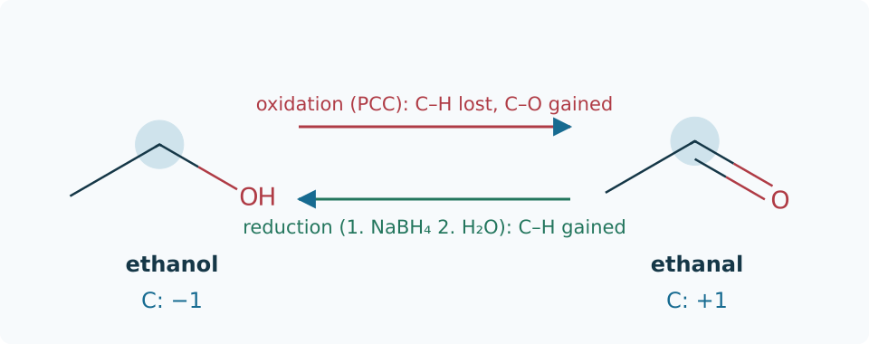
Ethanol and ethanal interconvert
Before naming a reagent, compare start and target: more C–O or fewer C–H means oxidation; more C–H means reduction. Then pick a reagent that does that and nothing else.
Activating OH: make it leave as water
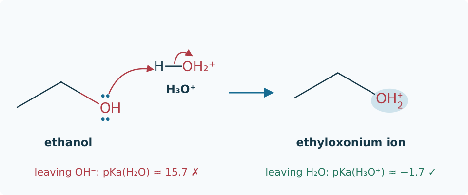
Protonation of ethanol by hydronium
OH⁻ is a strong base, so it’s a poor leaving group. Protonate the OH first, and the group that leaves is neutral water, a weak base.
Evidence: did the alcohol really oxidise?
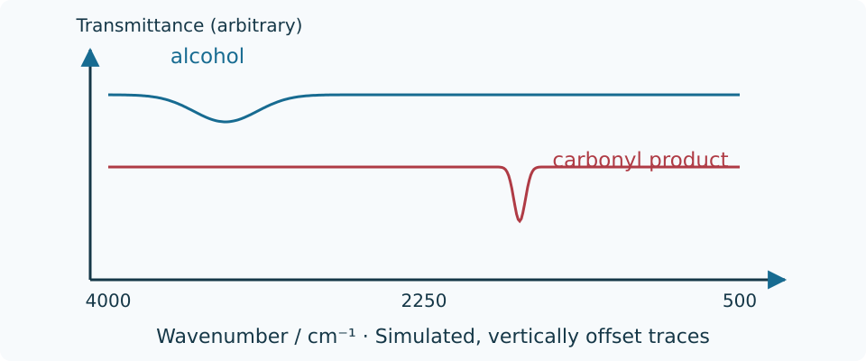
Schematic IR traces before and after oxidation
A broad O–H band (3200–3600 cm⁻¹) that disappears and a strong C=O band (about 1715 cm⁻¹) that appears both support oxidation to a ketone.
Try it: after oxidising propan-2-ol, the IR shows C=O and no O–H. What’s still unproved?
Identity and purity. IR shows which groups are present, not which ketone, and not whether the sample is pure.
From grams to the limiting reagent
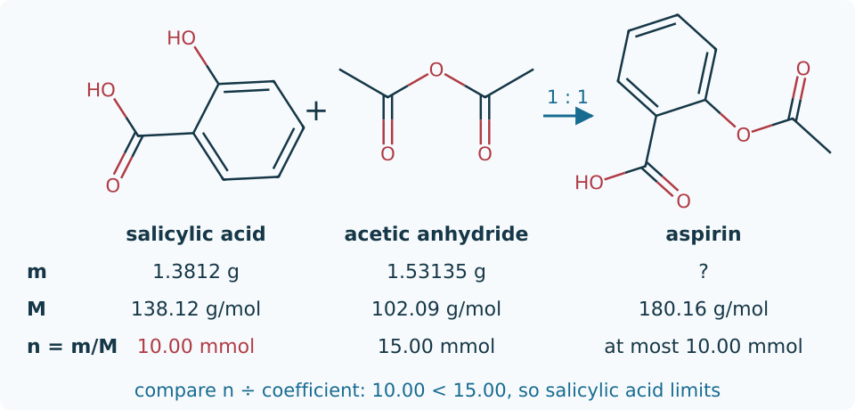
Amounts in the aspirin synthesis
Convert each mass to moles, n = m/M, then compare n ÷ coefficient. The smallest value limits the product. Never compare grams directly.
Try it: for 2 A + B → P with 12 mmol A and 8 mmol B, which limits, and how much P?
A limits: 6 mmol P. A allows 12 ÷ 2 = 6, B allows 8 ÷ 1 = 8. The larger amount can still limit.
Theoretical mass and yield
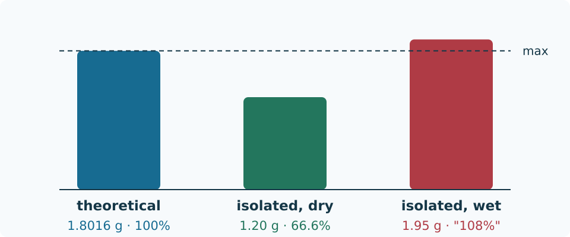
Theoretical, isolated and wet masses
Theoretical mass = 10.00 mmol × 180.16 g/mol = 1.8016 g. Isolated yield = 1.20 g ÷ 1.8016 g = 66.6%.
Try it: a wet sample weighs 1.95 g. Is the yield 108%?
No. You can’t make more pure product than the stoichiometry allows. The extra mass is water, solvent or impurity, so dry the sample and check your inputs.
Conversion, yield and purity answer different questions
quantity
question it answers
measured by
conversion
how much starting material reacted?
starting material left (e.g. TLC (thin-layer chromatography), NMR)
isolated yield
how much product did I recover?
product mass ÷ theoretical mass
purity
how much of my solid is the product?
melting point, NMR, chromatography
Try it: all the starting material is gone, but the isolated yield is only 40%. Give two reasons.
Side reactions made other products, and losses during work-up, filtering or recrystallisation. Full conversion doesn’t mean full yield.
Mistakes we see every year
mistake
fix
classifying an alcohol by its number of carbons
count C neighbours of the OH carbon
secondary alcohol oxidised to an aldehyde
the C=O stays where the OH was
(CH₃)₃C=O drawn from a tertiary alcohol
no C–H means no simple oxidation
“oxidation means adding O”
look for lost C–H, gained C–O
C=O counted +1 in oxidation states
a double bond counts twice
“+ H⁺” written with no donor
draw water and its OH⁻
NaBH₄ used on an ester
it reduces aldehydes and ketones
comparing grams to find the limit
compare n ÷ coefficient
yield over 100% reported
dry and recheck, it’s not product
Summary
concept
key fact
alcohol class
count C neighbours of the OH carbon
oxidation
1° → aldehyde → acid; 2° → ketone; 3° no
stop at aldehyde
PCC, no water
oxidation state
C–O +1, C–H −1, C–C 0
NaBH₄ reduction
H⁻ to C, alkoxide, then H⁺ from water
new stereocentre
achiral reagent gives a racemate
activating OH
protonate, so water leaves
amounts
n = m/M, compare n ÷ coefficient
yield
isolated ÷ theoretical; not purity
Next: nucleophiles adding to C=O, the general version of today’s hydride step (Day 16). Practice:exercises · self-check